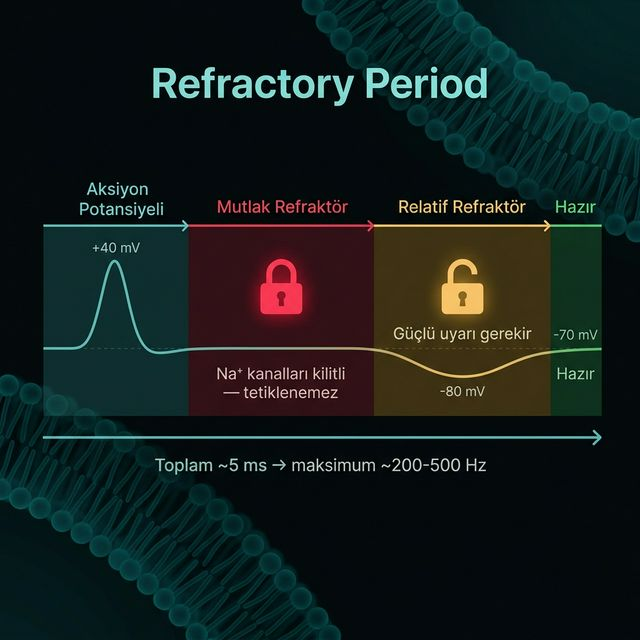

\(\text{Na}^+\) kanallarının inaktivasyon kapıları hâlâ tıkalıdır. Bu sürede kanal fiziksel olarak açılamaz; uyarının şiddeti ne olursa olsun yeni bir aksiyon potansiyeli tetiklemek imkansızdır.
\(\text{Na}^+\) kanalları sıfırlanmaya başlar ancak \(\text{K}^+\) kanalları hâlâ açık olduğu için zar \(-80\) mV seviyesindedir. Eşiğe ulaşmak için normalden çok daha güçlü bir uyarı gerekir.
Sinyalin geriye sönmesini engelleyerek tek yönlü iletimi sağlar. Ayrıca nöronun maksimum frekansını (~200-500 Hz) belirler. Bilgi büyüklükle değil, ateşleme frekansıyla kodlanır.
Refraktör periyot bir "limit" değil, bir tasarımdır. Sinyali kontrollü tutar, frekansı anlamlı kılar ve sistemde kaos oluşmasını engeller.
